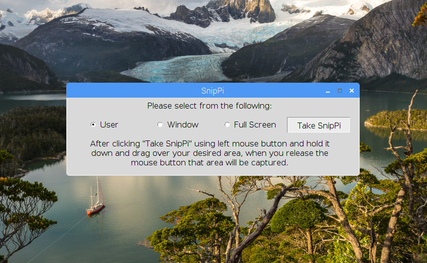
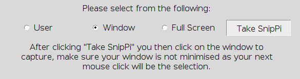
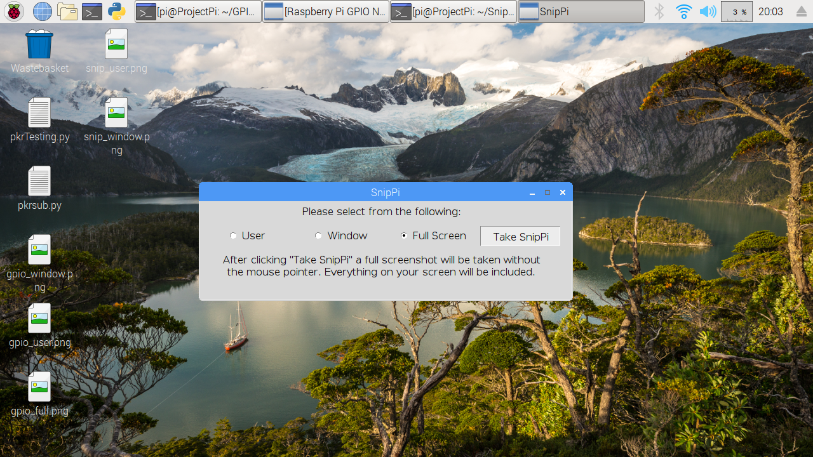

SnipPi GUI

I didn't know of any built-in Raspbian software at the time other than using command line. I created the SnipPi GUI to
make it easier for myself or anyone who needed it and having 3 options of capture.
User: gives you the ability to start the
capture from wherever holding the left mouse button and dragging around creating a rectangle which is your capture area.
Window:
gives you the ability to click on a window even if it's on task bar.
Full Screen: will take a screen shot of screen.
Don't
worry about the mouse position as you will notice it disappear briefly for the picture.
Mouse over the pictures below for more information


